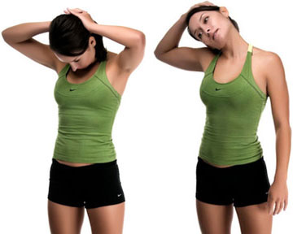

Упражнение для растяжки шеи
Техника выполнения:
Упражнение бывает двух видов.
Вид первый:
- Наклоните голову вниз, как только возможно, подбородком обязательно дотронуться до верхнего участка груди, вы должны почувствовать растяжения не только шеи, но и лёгкое растяжение мышц спины. В нижней точки задержитесь на 2-3 секунды.
- После отклоните голову назад и также остановитесь для лучше растяжки на пару секунд.
- Не задерживайте дыхание дышите, при наклоне головы выдох, при опрокидывании назад вдох.
- Для лучшей растяжки при опускании головы вниз, слегка надавливайте руками на затылок.
- Помните шея это сгусток нервных окончаний, поэтому никакой резкости, всё делается плавно, подконтрольными движениями.
- Также как на рисунке справа, выполните наклоны головы в сторону, для растяжки боковых мышц шеи
- Все надавливания руками носят умеренный характер, до ощущения лёгкого дискомфорта, но не резкой боли.
Вид второй:
- Станьте прямо, медленно поверните голову влево, потянитесь как можно дальше, 2 секунды задержка, затем в правую сторону, выполните по 5-6 поворотов в каждую сторону.
- После можете выполнить круговые движения головой, используйте полную амплитуду движения – максимально наклоняя голову вперёд, вбок и назад.